NFS文件系统
一、NFS概念
全称: Network File System. 一个基于网络的文件系统, 可以实现多台电脑共享文件夹的功能
1.1 什么是NFS？
NFS（Network File System）即网络文件系统，是FreeBSD支持的文件系统中的一种，它允许网络中的计算机之间通过TCP/IP网络共享资源。在NFS的应用中，本地NFS的客户端应用可以透明地读写位于远端NFS服务器上的文件，就像访问本地文件一样。
网络文件系统，英文Network File System(NFS)，是由SUN公司研制的UNIX表示层协议(presentation layer protocol)，能使使用者访问网络上别处的文件就像在使用自己的计算机一样。
NFS是基于UDP/IP协议的应用，其实现主要是采用远程过程调用RPC机制，RPC提供了一组与机器、操作系统以及低层传送协议无关的存取远程文件的操作。RPC采用了XDR的支持。XDR是一种与机器无关的数据描述编码的协议，他以独立与任意机器体系结构的格式对网上传送的数据进行编码和解码，支持在异构系统之间数据的传送。
它的主要功能是通过网络让不同的机器系统之间可以彼此共享文件和目录。NFS服务器可以允许NFS客户端将远端NFS服务器端的共享目录挂载到本地的NFS客户端中。在本地的NFS客户端的机器看来，NFS服务器端共享的目录就好像自己的磁盘分区和目录一样。一般客户端挂载到本地目录的名字可以随便，但为方便管理，我们要和服务器端一样比较好。其就相当于windows里面共享文件，然后其他主机把这个共享文件映射成了本地盘使用一样。
NFS一般用来存储共享视频，图片等静态数据。
1.2 NFS服务端与客户端通信过程
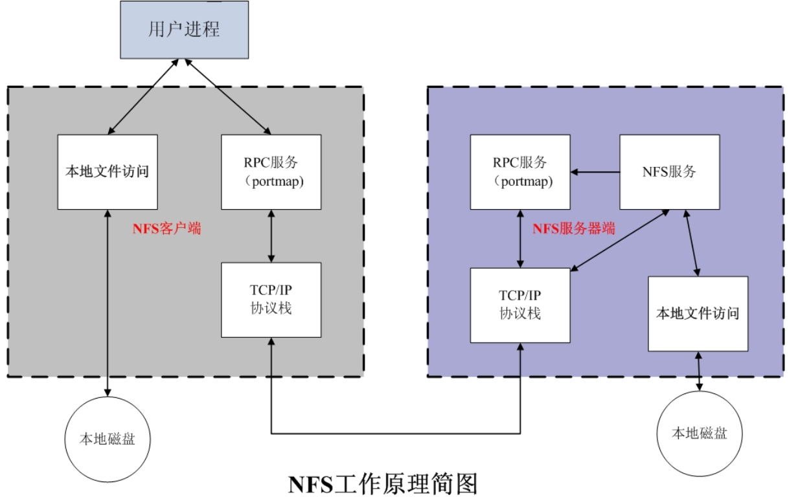
- 首先服务器端启动RPC服务，并开启111端口；启动NFS服务，并向RPC注册端口信息 客户端启动RPC（portmap服务），向服务端的RPC(portmap)服务请求服务端的NFS端口（由程序在NFS客户端发起存取文件的请求，客户端本地的RPC(rpcbind)服务会通过网络向NFS服务端的RPC的111端口发出文件存取功能的请求。）
- 服务端的RPC(portmap)服务反馈NFS端口信息给客户端。
- 客户端通过获取的NFS端口来建立和服务端的NFS连接并进行数据的传输。（客户端获取正确的端口，并与NFS daemon联机存取数据。）
- 存取数据成功后，返回前端访问程序，完成一次存取操作。 NFS在文件传送或信息传送过程中依赖于RPC协议。RPC，远程过程调用 (Remote Procedure Call) 是能使客户端执行其他系统中程序的一种机制。NFS本身是没有提供信息传输的协议和功能的，但NFS却能让我们通过网络进行资料的分享，这是因为NFS使用了一些其它的传输协议。而这些传输协议用到这个RPC功能的。可以说NFS本身就是使用RPC的一个程序。或者说NFS也是一个RPC SERVER。所以只要用到NFS的地方都要启动RPC服务，不论是NFS SERVER或者NFS CLIENT。这样SERVER和CLIENT才能通过RPC来实现PROGRAM PORT的对应。可以这么理解RPC和NFS的关系：NFS是一个文件系统，而RPC是负责信息的传输。 NFS的原理结构其实还是挺简单，NFS就是网络共享目录，就是共享文件.服务端共享，客户端挂载使用。挂载流程原理，就是上面提到的5个流程。NFS要向RPC去注册端口信息。NFS的端口也是随机获取的。
1.3 NFS优缺点
NFS优点：
- 节省本地存储空间，将常用的数据存放在一台NFS服务器上且可以通过网络访问，那么本地终端将可以减少自身存储空间的使用。
- 用户不需要在网络中的每个机器上都建有Home目录，Home目录可以放在NFS服务器上且可以在网络上被访问使用。
- 一些存储设备CDROM和Zip（一种高储存密度的磁盘驱动器与磁盘）等都可以在网络上被别的机器使用。这可以减少整个网络上可移动介质设备的数量。
- 简单容易上手，维护非常快捷简单
NFS缺点：
- 局限性容易发生单点故障，及server机宕机了所有客户端都不能访问
- 在高并发下NFS效率/性能有限
- 客户端没用用户认证机制，且数据是通过明文传送，安全性一般（一般建议在局域网内使用）
- NFS的数据是明文的，对数据完整性不做验证
- 多台机器挂载NFS服务器时，连接管理维护麻烦
二、搭建NFS
2.1 搭建环境
| 操作系统 | ip地址 | 角色 | 名称 |
|---|---|---|---|
| CentOS 7 64位 7.5 内核：5.4 | 192.168.3.248 | Host | NFS Host |
| CentOS 7 64位 7.5 内核：5.4 | 192.168.3.249 | Client | NFS Client1 |
2.2 搭建NFS host
注意：共享系统的服务端和客户端不能安装在同一台服务器上
安装依赖
yum install rpcbind nfs-utils分别为rpcbind和nfs服务设置开机启动服务
## 首先必须先启动RPC服务 systemctl start rpcbind && systemctl enable rpcbind ## 再启动NFS服务 systemctl start nfs-server && systemctl enable nfs-server创建共享文件夹
mkdir -p /share编辑nfs服务器配置文件
# 1. 编辑文件 vim /etc/exports # 2. 新增如下内容 /share 192.168.3.*(rw,sync,insecure,no_subtree_check,no_root_squash) # rw表示可读可写; no_root_squash的配置可以让任何用户都能访问此文件夹 ----------------------------------------------------------------------------- /home *(ro,sync,insecure,no_root_squash) /data/nginx 192.168.1.*(rw,sync,insecure,no_subtree_check,no_root_squash) 参数 说明 ro 只读访问 rw 读写访问 sync 所有数据在请求时写入共享 async nfs在写入数据前可以响应请求 secure nfs通过1024以下的安全TCP/IP端口发送 insecure nfs通过1024以上的端口发送 wdelay 如果多个用户要写入nfs目录，则归组写入（默认） no_wdelay 如果多个用户要写入nfs目录，则立即写入，当使用async时，无需此设置 hide 在nfs共享目录中不共享其子目录 no_hide 共享nfs目录的子目录 subtree_check 如果共享/usr/bin之类的子目录时，强制nfs检查父目录的权限（默认） no_subtree_check 不检查父目录权限 all_squash 共享文件的UID和GID映射匿名用户anonymous，适合公用目录 no_all_squash 保留共享文件的UID和GID（默认） root_squash root用户的所有请求映射成如anonymous用户一样的权限（默认） no_root_squash root用户具有根目录的完全管理访问权限 anonuid=xxx 指定nfs服务器/etc/passwd文件中匿名用户的UID anongid=xxx 指定nfs服务器/etc/passwd文件中匿名用户的GIDreload配置文件
exportfs -rv关闭防火墙
systemctl stop firewalld.service # 停止防火墙服务 systemctl disable firewalld.service # 禁止开机启动至此, NFS host的配置就完成了
2.3 搭建NFS Client1
安装nfs-utils依赖
yum install nfs-utils执行命令测试NFS Host是否配置了共享目录
showmount -e 192.168.3.248若能出现上图长方形所圈住的信息, 那么标识NFS Host的配置成功了
将NFS Client1的
/root/testshare目录挂载在NFS Host的/share目录上# 在NFS Client1 机器上执行如下命令 # 创建/root/testshare文件夹 mkdir /root/testshare # 挂载目录, 命令规则: mount -t nfs NFS_HOST_IP:共享的目录 当前要挂载到NFSHOST共享目录的目录 mount -t nfs 192.168.3.10:/share /root/testshare查看挂载结果
df -h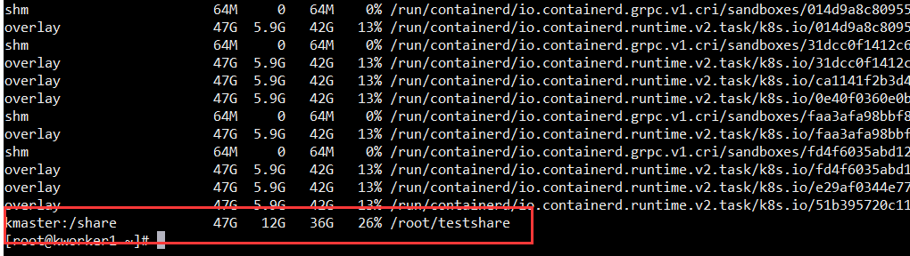
2.4 NFS服务功能测试
在NFS Client1中的
/root/testshare目录下执行如下命令
echo "Hello NFS Client1 192.168.3.11" > nfsclient1.html在NFS HOST中的
/share目录下执行命令
ls && cat nfsclient1.html若能如上图所示 NFS服务搭建成功
3 可能存在的问题
因为mount命令的挂载是临时的, 当我们重启机器后, mount命令就会失效。
- 解决方案: 每次开机再挂载一遍
这里可以采用添加自定义service或者利用rc.local的方式实现
方式一
更改client服务器挂载文件
vim /etc/fstab
tmpfs /dev/shm tmpfs defaults 0 0 devpts /dev/pts devpts gid=5,mode=620 0 0 sysfs /sys sysfs defaults 0 0 proc /proc proc defaults 0 0 192.168.3.248:/root/nfs/share /root/testshare nfs defaults 0 0以上，在最后一行，添加该挂载，保证重启后挂载仍然生效。
方式二
vim /etc/rc.local
[root@NFS_client mnt]# vi /etc/rc.local #!/bin/sh touch /var/lock/subsys/local /bin/mount -t nfs 192.168.3.248:/root/nfs/share /root/testshare添加文件执行权限
chmod +x /etc/rc.d/rc.local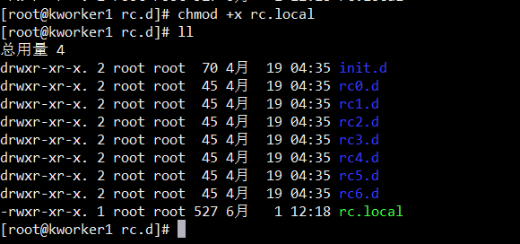
若突然发现
/share容量不够, 该怎么办?- 解决方案:
- 加硬盘
- 将其他磁盘中剩余的空间分出一个区并将
/share文件夹挂载于此
- 其实上面两种方案属于同一种, 即:
将/share文件夹挂载到容量大的磁盘中
- 解决方案:
4 以加硬盘的方式实现扩容
由于本次demo的三台服务器是虚拟机, 所以我们可以直接为虚拟机添加硬盘(使用VMware), 步骤如下(
注: 因为两台client是共享于Host的文件夹, 所以要对Host的/share目录进行扩容
):
将NFS Host虚拟机关机
并按照如下步骤进行添加硬盘
VMware
VirtualBox(必须关机在操作)
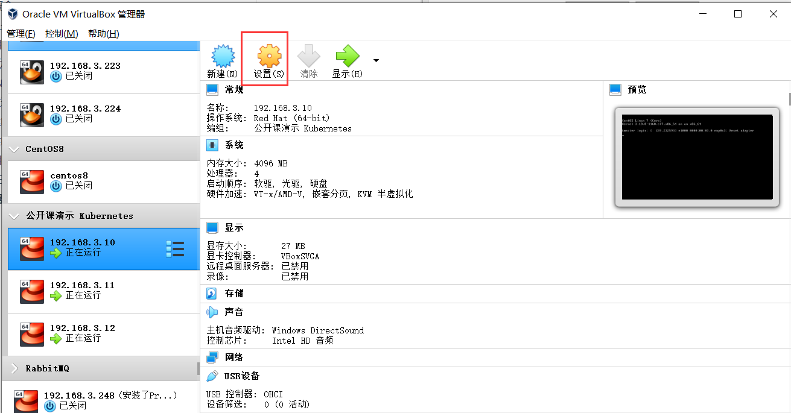
创建虚拟机磁盘 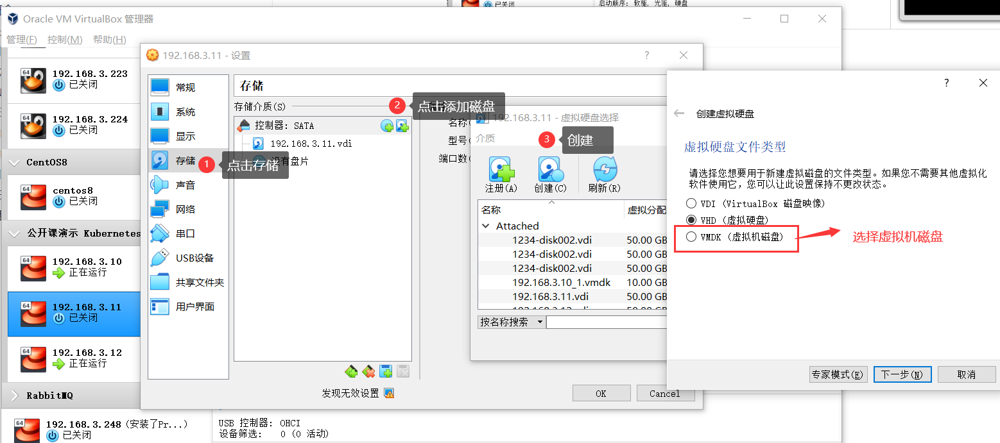
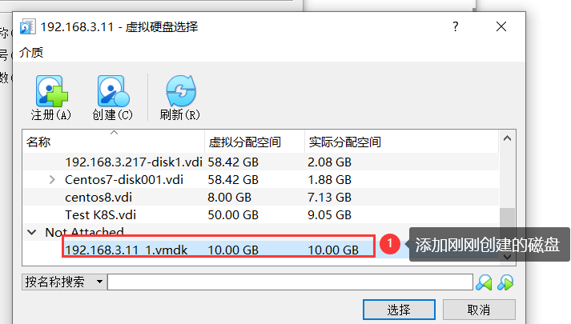
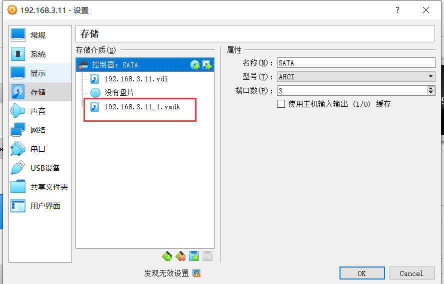
开机, 并执行如下命令
fdish -l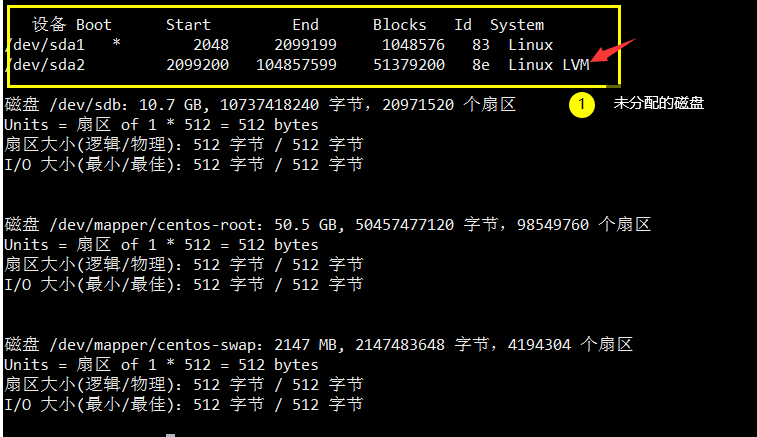
对硬盘进行分区和格式化(与window系统分盘一样), 分别执行如下操作
fdisk /dev/sdb # /dev/sdb就是上图中红框中的第一行的信息
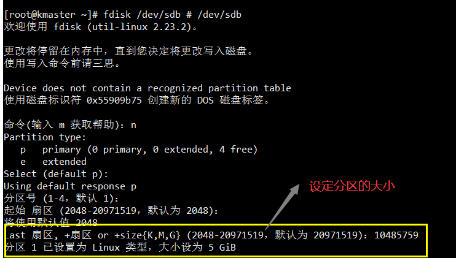
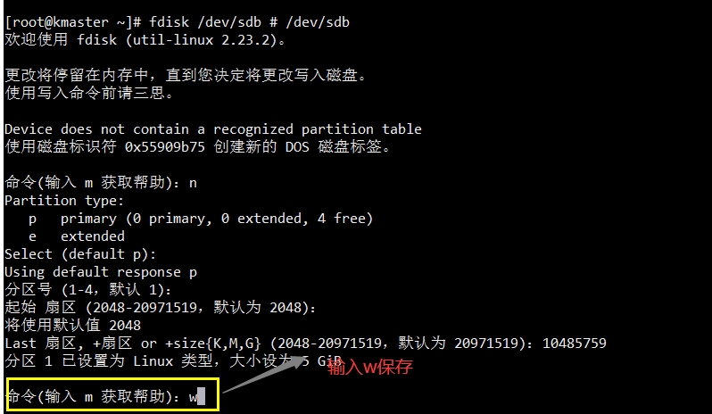
按照上述步骤操作后, 5G的区被分出来了, 我们要使用它还得先格式化。 获取新分出来区的路径:
fdisk -l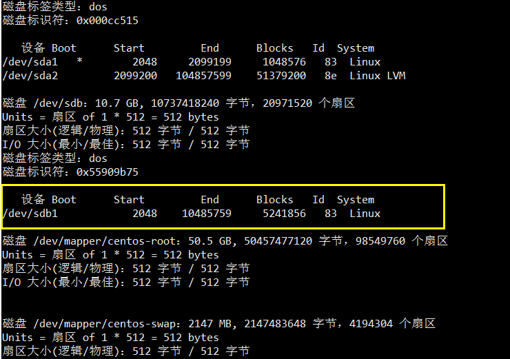以ext3的格式格式化新建的分区:
mkfs.ext3 /dev/sdb1执行挂载命令
mount /dev/sdb1 /share查看结果
df -h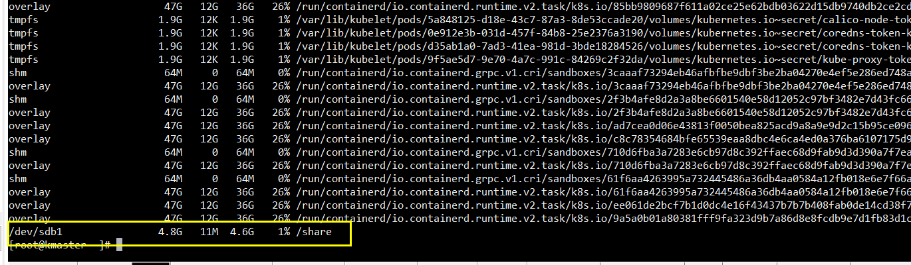这个时候我们需要将
NFS Client1和NFS Client2重新挂载下目录, 分别在两台机器中执行如下命令:mount -t nfs 192.168.3.10:/share /root/testshare. 执行完后, 我们之前存储的文件夹就没了, 所以如果有重要文件, 则需要对NFS Client1和NFC Client2的文件进行备份。做完上述操作后, 我们可以用相同的方式进行测试, 在
NFS Client1中新建一个文件, 并在NFS Host中进行查看, 若能同步, 则表示NFS Host扩容成功.同样的, 因为
NFS Host也使用了mount命令, 所以也要对NFS Host设置开机自动挂载机制。